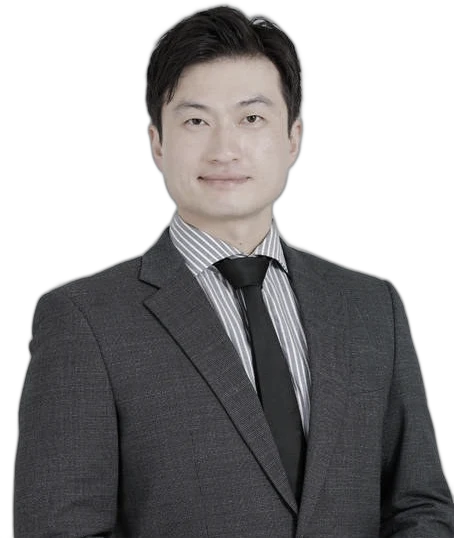

「하던 대로」 맡겨 둔 사이 사라지는 세금이 있습니다. 공인회계사가 처음부터 끝까지 직접 확인하고, 지금 받을 수 있는 것부터 찾아 드립니다.

기한이 토·일·공휴일이면 다음 영업일로 미뤄집니다(국기법§5).
평일·주말 관계없이 최대한 빨리 답변드립니다. 처음엔 상호나 회사명을 밝히지 않으셔도 됩니다.
규모는 달라도 원칙은 같습니다. 담당 회계사가 직접 보고, 직접 설명합니다.
상담부터 신고·보고서까지 담당 회계사 한 사람이 끝까지 맡습니다. 중간 전달자가 없습니다.
주말·퇴근 후 문의도 괜찮습니다. 먼저 「지금 무엇을 하면 되는지」 방향부터 알려 드립니다.
어려운 세법 용어 대신, 사장님 상황에 맞춰 무엇이 이득이고 무엇이 위험한지 말씀드립니다.
장사에만 집중하실 수 있도록,
장부와 신고는 회계사가 챙깁니다.
기장을 맡기 전에 지난 신고를 먼저 봅니다. 받을 수 있었던 공제가 있으면 경정청구로 되찾습니다.
아르바이트·일용직 신고, 4대보험, 두루누리 지원까지 한 번에 정리합니다.
영수증 사진 한 장, 궁금한 점 한 줄이면 됩니다. 어려운 서류는 저희가 대신 챙깁니다.
처음 맡기실 때는 보통 이렇게 진행됩니다.
사업자등록증과 최근 신고서를 보고, 놓친 공제·가산세 위험이 있는지 먼저 확인합니다.
매달 장부를 정리하고 부가세·종합소득세(법인세)·원천세를 기한에 맞춰 신고합니다.
직원 채용, 설비 구입, 법인 전환처럼 세금이 달라지는 결정 전에 미리 계산해 드립니다.
가능합니다. 신고 기간을 피해 옮기면 됩니다. 기존 자료 인수는 저희가 진행하니 따로 연락하실 필요는 없습니다. 옮기기 전에 지난 신고를 한 번 점검해 드리는 것만 맡기셔도 됩니다.
매출 규모와 직원 수, 거래 건수에 따라 달라집니다. 상담 때 현재 상황을 듣고 월 비용을 미리 정해 말씀드립니다. 상담과 첫 점검은 무료입니다.
① 사업자등록증 ② 최근 부가세·종합소득세 신고서(있으면) ③ 홈택스 아이디(수임 동의용) 이 세 가지면 시작할 수 있습니다. 나머지는 저희가 확인하며 하나씩 요청드립니다.
네. 아르바이트·일용직 원천세와 간이지급명세서, 4대보험 취득·상실 신고까지 함께 처리합니다. 신고를 빠뜨리면 가산세와 비용 불인정이 생기기 쉬워 꼭 챙겨야 하는 부분입니다.
소득 규모, 대출, 가족 급여, 앞으로의 계획에 따라 답이 다릅니다. 현재 세금과 법인 전환 후 세금을 나란히 계산해서 보여 드립니다.
보조금·세액감면·세액공제를 한 장으로 확인합니다. 아래에서 우리 가게·회사에 맞는 답을 고르면 숫자가 바로 바뀝니다.
※ 2026년 10월 현행 규정 기준의 개략 추정입니다. 세액공제·감면은 낸 세금(최저한세 적용) 안에서만 받을 수 있고, 남는 공제는 10년간 이월됩니다. 업종·상시근로자 수 계산·중복 적용 제한·사후관리 요건과 보조금 예산·공고에 따라 실제 금액은 달라집니다. 입력한 내용은 저장되지 않습니다.
연구·인력개발비 세액공제(조특§10)와 통합투자세액공제(조특§24)를 1분 만에 추정합니다. 답을 고르면 숫자가 바로 바뀝니다.
※ 2026년 10월 현행 규정 기준의 개략 추정입니다. 연구개발비는 기업부설연구소·연구개발전담부서 인정, 연구노트 등 증빙이 필요합니다. 신성장·원천기술과 국가전략기술은 대상 기술·시설 요건을 충족해야 합니다. 세액공제는 낸 세금(최저한세 적용) 안에서 받고, 남는 금액은 10년간 이월됩니다. 입력한 내용은 저장되지 않습니다.
외부감사, 내부통제, 투자금 실사까지.
대형 회계법인 출신 회계사가 직접 수행합니다.
대형 회계법인의 감사 절차를 그대로 적용하되, 회사 규모에 맞게 군더더기 없이 진행합니다.
해외 자회사 재무 책임자로 감사를 받아 본 경험이 있습니다. 자료 요청부터 현실적으로 합니다.
지적만 하고 끝내지 않습니다. 회계처리·내부통제 개선안을 함께 정리해 드립니다.
외감법 대상 법인의 재무제표 감사, 초도감사, 임의감사. 감사 일정과 자료 목록을 처음에 확정합니다.
투자계약서에서 정한 용도대로 쓰였는지 증빙으로 확인합니다. 특수관계자 거래·목적 외 지출은 따로 봅니다.
경비 집행과 승인 절차를 점검하고, 거래 유형별로 위험을 정리해 보고서로 드립니다.
자료가 갖춰진 뒤 보통 2주 안팎입니다. 투자금 규모가 크거나 검토 건수가 많으면 3~4주 걸릴 수 있습니다. 결산 직후에는 의뢰가 몰리니 미리 일정을 정해 주세요.
① 확인하고 싶은 범위·포인트 ② 투자계약서 사본 ③ 피투자사에 실사 일정 안내. 이 세 가지가 있으면 빠르게 진행됩니다.
가능합니다. 임원·주주 등 특수관계자 거래나 고액 지출처럼 지정하신 거래만 검토할 수 있습니다.
직전 연도 자산·부채·매출·직원 수 기준으로 판단합니다(외감법§4). 결산서를 보내 주시면 대상 여부와 감사 시작 시점을 알려 드립니다.
회사 규모, 검토 범위, 건수로 정합니다. 여러 건을 함께 맡기시면 별도로 견적드립니다.
세입세출 결산과 보조금 정산.
지자체 점검 현장을 아는 회계사가 함께합니다.
강남구청 어르신복지과에서 사회복지시설 현장 점검을 맡았습니다. 무엇을 보는지 알고 준비합니다.
사회복지법인 및 사회복지시설 재무·회계 규칙에 맞춰 예산·결산·장부를 정리합니다.
보조금·후원금 정산, 결산 보고, 외부감사 대응까지 한 창구에서 처리합니다.
세입세출결산서, 재무상태표·운영성과표 작성과 결산 보고 자료를 준비합니다.
집행 내역과 증빙을 대조하고, 목적 외 사용·증빙 누락을 미리 찾아 정산서를 완성합니다.
지자체 지도점검과 외부감사 전에 자료를 점검하고, 지적 사항에 대한 개선 계획을 함께 세웁니다.
증빙 누락, 예산 과목과 다른 집행, 승인 없는 전용, 후원금과 보조금이 섞인 지출이 많습니다. 정산 전에 이 네 가지부터 점검합니다.
네. 소규모 시설은 결산·정산 시기만 맡기셔도 됩니다. 평소 장부는 시설에서 쓰시고, 저희는 검토와 마감을 돕는 방식도 가능합니다.
점검 항목을 먼저 받아 보시고 연락 주세요. 회계 관련 항목을 미리 점검하고 보완할 부분을 정리해 드립니다.
결과만 전달하지 않습니다.
진행 과정을 함께 나누는 회계사입니다.
이규범 회계사는 세연회계법인 부대표로 세무기장, 회계감사, 세무자문을 주로 맡고 있습니다.
딜로이트 안진회계법인에서 감사 실무를 익힌 뒤, 국내 대기업의 일본 자회사에 주재원으로 파견되어 5년간 재무·세무·인사를 직접 책임졌습니다. 이후 콜리어스 인터내셔널 재팬(도쿄)에서 재무 시니어매니저로 일했습니다.
감사를 하는 쪽과 받는 쪽, 양쪽 자리를 모두 겪었기 때문에 회사가 실제로 무엇을 어려워하는지 압니다. 강남구청 사회복지시설 점검과 세무서 위원 활동으로 공공 분야의 기준도 함께 익히고 있습니다.
| 세무기장 | 음식점·소매업 등 소상공인 기장 및 부가세·종합소득세 신고 | |
| 회계감사 | 외감법 대상 법인 재무제표 감사, 초도감사 | |
| 실사 | 투자금 사용 적정성 실사, 지출 적정성 검토 | |
| 경정청구 | 고용·투자세액공제 누락분 경정청구 | |
| 사회복지 | 사회복지법인·시설 결산 및 보조금 정산 | |
| 국제조세 | 외국계 한국법인 법인세·원천세, 본사 보고(일본어·영어) |
| 세무자문 | 일본 법인 감자를 통한 외형표준과세 부담 절감 | 일본 법인 재직 시 |
| 세무자문 | 주재원 사택 비용의 손금 처리 정비 | 일본 법인 재직 시 |
| 비용 절감 | 은행 간 비교로 해외 송금 수수료 인하 | 일본 법인 재직 시 |
| 실사 | 거래처 지출 적정성 검토 보고서 작성 |
| 위원 | 역삼세무서 정보공개심의회 위원 위촉 | 2026. 10 |
| 위원 | 계약갱신심의위원회 위원, 강남구청 합동 현장 점검 |
세무 일정과 새 소식을 알려 드립니다.
전화·카카오톡·문의 양식 어느 쪽이든 편하게 연락 주세요.
 카카오톡
카카오톡